import numpy as np
import pandas as pd
import sklearn as sk
import matplotlib.pyplot as plt
import plotnine as p9
import seaborn as sns
sk.set_config(transform_output="pandas")
from sklearn.model_selection import train_test_split
from sklearn.linear_model import LogisticRegression
from sklearn.compose import ColumnTransformer, make_column_selector
from sklearn.preprocessing import OneHotEncoder, OrdinalEncoder, StandardScaler
from sklearn.metrics import confusion_matrix, classification_report
from sklearn.metrics import accuracy_score
from sklearn.metrics import roc_auc_score, roc_curve
import matplotlib.pyplot as plt
from sklearn.naive_bayes import GaussianNB
from sklearn.neighbors import KNeighborsClassifier
from sklearn.base import BaseEstimator, TransformerMixin, ClassifierMixin
from sklearn.pipeline import Pipeline
from sklearn.preprocessing import FunctionTransformer
from sklearn.naive_bayes import GaussianNB, CategoricalNBbank_full=pd.read_csv("../../assignments/labs/labData/bank_marketing_dataset.csv")bank_full| Unnamed: 0 | age | job | marital | education | default | balance | housing | loan | contact | ... | previous | poutcome | month_numeric | year | euribor3m | emp.var.rate | nr.employed | cons.price.idx | cons.conf.idx | y | |
|---|---|---|---|---|---|---|---|---|---|---|---|---|---|---|---|---|---|---|---|---|---|
| 0 | 0 | 58 | management | married | tertiary | no | 2143 | yes | no | unknown | ... | 0 | unknown | 5 | 2008 | 4.857 | 1.1 | 5191.0 | 93.994 | -36.4 | no |
| 1 | 1 | 44 | technician | single | secondary | no | 29 | yes | no | unknown | ... | 0 | unknown | 5 | 2008 | 4.857 | 1.1 | 5191.0 | 93.994 | -36.4 | no |
| 2 | 2 | 33 | entrepreneur | married | secondary | no | 2 | yes | yes | unknown | ... | 0 | unknown | 5 | 2008 | 4.857 | 1.1 | 5191.0 | 93.994 | -36.4 | no |
| 3 | 3 | 47 | blue-collar | married | unknown | no | 1506 | yes | no | unknown | ... | 0 | unknown | 5 | 2008 | 4.857 | 1.1 | 5191.0 | 93.994 | -36.4 | no |
| 4 | 4 | 33 | unknown | single | unknown | no | 1 | no | no | unknown | ... | 0 | unknown | 5 | 2008 | 4.857 | 1.1 | 5191.0 | 93.994 | -36.4 | no |
| ... | ... | ... | ... | ... | ... | ... | ... | ... | ... | ... | ... | ... | ... | ... | ... | ... | ... | ... | ... | ... | ... |
| 45206 | 45206 | 51 | technician | married | tertiary | no | 825 | no | no | cellular | ... | 0 | unknown | 11 | 2010 | 1.047 | -1.1 | 4963.6 | 94.767 | -50.8 | yes |
| 45207 | 45207 | 71 | retired | divorced | primary | no | 1729 | no | no | cellular | ... | 0 | unknown | 11 | 2010 | 1.047 | -1.1 | 4963.6 | 94.767 | -50.8 | yes |
| 45208 | 45208 | 72 | retired | married | secondary | no | 5715 | no | no | cellular | ... | 3 | success | 11 | 2010 | 1.047 | -1.1 | 4963.6 | 94.767 | -50.8 | yes |
| 45209 | 45209 | 57 | blue-collar | married | secondary | no | 668 | no | no | telephone | ... | 0 | unknown | 11 | 2010 | 1.047 | -1.1 | 4963.6 | 94.767 | -50.8 | no |
| 45210 | 45210 | 37 | entrepreneur | married | secondary | no | 2971 | no | no | cellular | ... | 11 | other | 11 | 2010 | 1.047 | -1.1 | 4963.6 | 94.767 | -50.8 | no |
45211 rows × 24 columns
bank_full.info()<class 'pandas.DataFrame'>
RangeIndex: 45211 entries, 0 to 45210
Data columns (total 24 columns):
# Column Non-Null Count Dtype
--- ------ -------------- -----
0 Unnamed: 0 45211 non-null int64
1 age 45211 non-null int64
2 job 45211 non-null str
3 marital 45211 non-null str
4 education 45211 non-null str
5 default 45211 non-null str
6 balance 45211 non-null int64
7 housing 45211 non-null str
8 loan 45211 non-null str
9 contact 45211 non-null str
10 day 45211 non-null int64
11 duration 45211 non-null int64
12 campaign 45211 non-null int64
13 pdays 45211 non-null int64
14 previous 45211 non-null int64
15 poutcome 45211 non-null str
16 month_numeric 45211 non-null int64
17 year 45211 non-null int64
18 euribor3m 45211 non-null float64
19 emp.var.rate 45211 non-null float64
20 nr.employed 45211 non-null float64
21 cons.price.idx 45211 non-null float64
22 cons.conf.idx 45211 non-null float64
23 y 45211 non-null str
dtypes: float64(5), int64(10), str(9)
memory usage: 10.4 MBbank_full["age_cat"] = pd.cut(bank_full["age"], bins=[0, 25,40, 60, np.inf], labels=False)
train_set, test_set = train_test_split(bank_full, test_size=0.2, random_state=93210,stratify=bank_full[["year","age_cat"]])fig, ax = plt.subplots(figsize=(8, 6))
sns.histplot(data=train_set, x="age", hue="y", stat="density", common_norm=False, ax=ax)
ax.set_title("Age by Target")
Text(0.5, 1.0, 'Age by Target')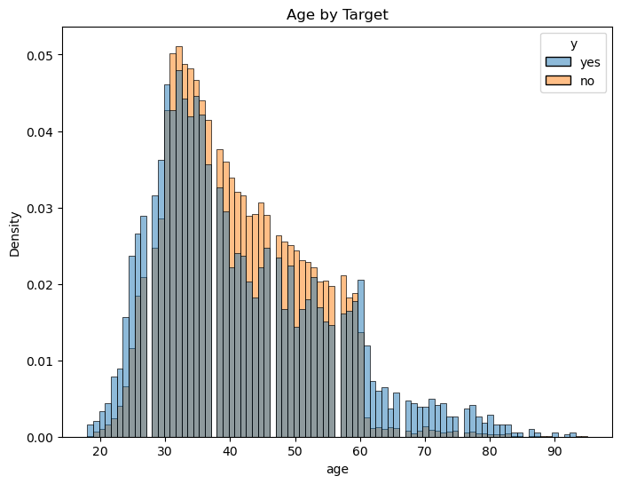
fig, ax = plt.subplots(figsize=(8, 6))
sns.histplot(data=train_set, x="euribor3m", hue="y", stat="density", common_norm=False, ax=ax)
ax.set_title("Euribor By Target")Text(0.5, 1.0, 'Age by Target')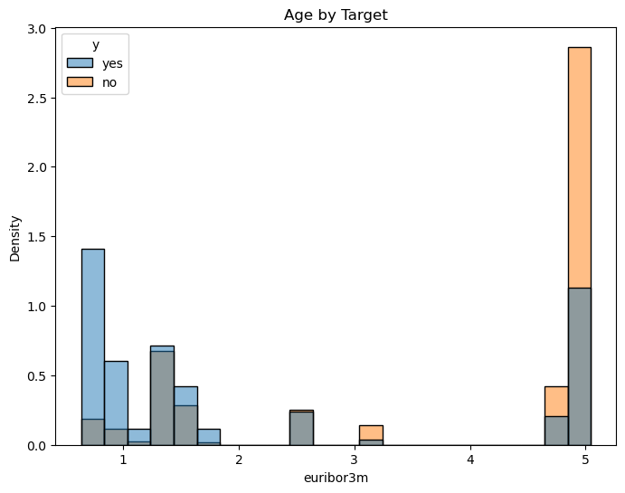
fig, ax = plt.subplots(figsize=(8, 6))
sns.histplot(data=train_set, x="euribor3m", hue="y", stat="density", ax=ax)
ax.set_title("Age by Target")Text(0.5, 1.0, 'Age by Target')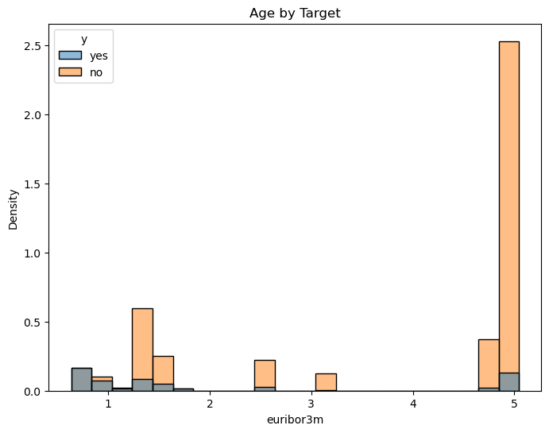
train_set["date"] = pd.to_datetime({'year': train_set['year'], 'month': train_set['month_numeric'], 'day': train_set['day']})euribor_df = (train_set.groupby('date')['euribor3m']
.first()
.reset_index()
)euribor_df = (train_set.groupby('date')[['euribor3m', 'cons.conf.idx', 'cons.price.idx','nr.employed']]
.first()
.reset_index()
)
sns.lineplot(data=euribor_df, x='date', y='euribor3m')
plt.xticks(rotation=45);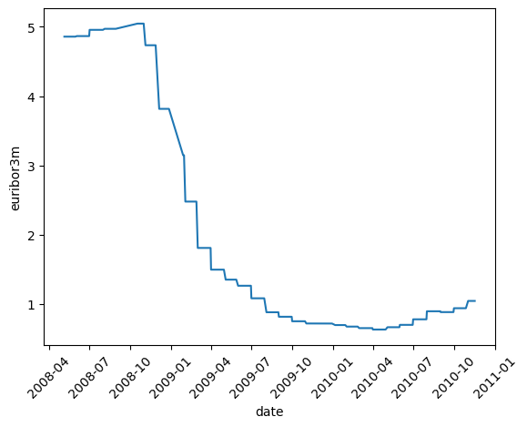
sns.lineplot(data=euribor_df, x='date', y='cons.conf.idx')
plt.xticks(rotation=45);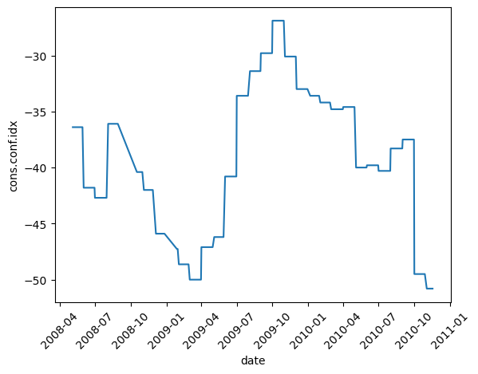
sns.lineplot(data=euribor_df, x='date', y='cons.price.idx')
plt.xticks(rotation=45);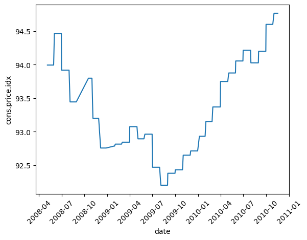
sns.lineplot(data=euribor_df, x='date', y='nr.employed')
plt.xticks(rotation=45);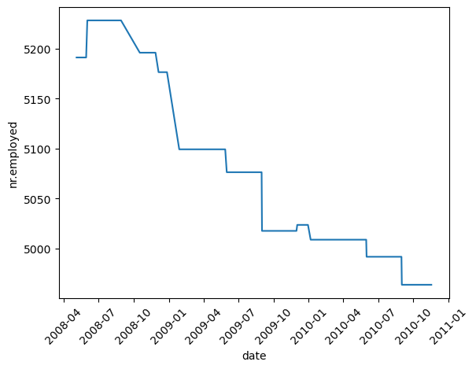
euribor_df = euribor_df.sort_values('date')
euribor_df["cpi_lag_90"] = np.interp(
(euribor_df['date']-pd.Timedelta(days=90)).astype(int),
euribor_df['date'].index.astype(int),
euribor_df["cons.price.idx"]
)
euribor_df["inflation_3m"] = (euribor_df["cons.price.idx"]/euribor_df['cpi_lag_90'])**(365 / 90.0)-1(euribor_df["cons.price.idx"]/euribor_df['cpi_lag_90'])**(365.0/90.0)-1date
2008-05-05 0.000000
2008-05-06 0.000000
2008-05-07 0.000000
2008-05-08 0.000000
2008-05-09 0.000000
...
2010-11-11 0.032303
2010-11-12 0.032303
2010-11-15 0.032303
2010-11-16 0.032303
2010-11-17 0.032303
Length: 556, dtype: float64sns.lineplot(data=euribor_df, x='date', y='inflation_3m')
plt.xticks(rotation=45);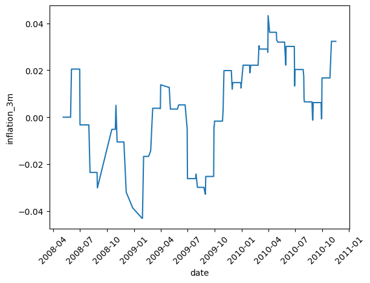
inflation_df = euribor_df[["date","inflation_3m"]]
train_set = train_set.merge(inflation_df,on="date")
test_set["date"] = pd.to_datetime({'year': test_set['year'], 'month': test_set['month_numeric'], 'day': test_set['day']})
test_set = test_set.merge(inflation_df,on="date")test_set| Unnamed: 0 | age | job | marital | education | default | balance | housing | loan | contact | ... | year | euribor3m | emp.var.rate | nr.employed | cons.price.idx | cons.conf.idx | y | age_cat | date | inflation_3m | |
|---|---|---|---|---|---|---|---|---|---|---|---|---|---|---|---|---|---|---|---|---|---|
| 0 | 25059 | 55 | technician | single | secondary | no | 2043 | yes | no | cellular | ... | 2008 | 4.733 | -0.1 | 5195.8 | 93.200 | -42.0 | no | 2 | 2008-11-18 | -0.065385 |
| 1 | 9678 | 54 | self-employed | divorced | tertiary | no | 3952 | no | no | unknown | ... | 2008 | 4.865 | 1.4 | 5228.1 | 94.465 | -41.8 | no | 2 | 2008-06-06 | -0.012861 |
| 2 | 23205 | 35 | technician | divorced | secondary | no | 1085 | no | no | cellular | ... | 2008 | 4.970 | 1.4 | 5228.1 | 93.444 | -36.1 | no | 1 | 2008-08-27 | -0.055422 |
| 3 | 17726 | 45 | services | married | secondary | no | -158 | yes | no | telephone | ... | 2008 | 4.955 | 1.4 | 5228.1 | 93.918 | -42.7 | no | 2 | 2008-07-29 | -0.035839 |
| 4 | 945 | 33 | admin. | married | secondary | no | -6 | yes | no | unknown | ... | 2008 | 4.857 | 1.1 | 5191.0 | 93.994 | -36.4 | no | 1 | 2008-05-07 | -0.032671 |
| ... | ... | ... | ... | ... | ... | ... | ... | ... | ... | ... | ... | ... | ... | ... | ... | ... | ... | ... | ... | ... | ... |
| 9029 | 7927 | 37 | admin. | married | secondary | no | -47 | yes | no | unknown | ... | 2008 | 4.857 | 1.1 | 5191.0 | 93.994 | -36.4 | no | 1 | 2008-05-30 | -0.032671 |
| 9030 | 19525 | 52 | management | married | tertiary | no | 0 | no | no | cellular | ... | 2008 | 4.970 | 1.4 | 5228.1 | 93.444 | -36.1 | no | 2 | 2008-08-07 | -0.055422 |
| 9031 | 39892 | 50 | blue-collar | married | primary | no | 3764 | no | no | telephone | ... | 2009 | 1.266 | -2.9 | 5076.2 | 92.963 | -40.8 | no | 2 | 2009-06-02 | -0.074986 |
| 9032 | 24921 | 41 | entrepreneur | married | secondary | no | 8491 | yes | no | cellular | ... | 2008 | 4.733 | -0.1 | 5195.8 | 93.200 | -42.0 | yes | 2 | 2008-11-18 | -0.065385 |
| 9033 | 20171 | 34 | management | married | tertiary | no | 5665 | no | no | cellular | ... | 2008 | 4.970 | 1.4 | 5228.1 | 93.444 | -36.1 | no | 1 | 2008-08-11 | -0.055422 |
9034 rows × 27 columns
fig, ax = plt.subplots(figsize=(8, 6))
sns.histplot(data=train_set, x="inflation_3m_x", hue="y", stat="density", ax=ax)
ax.set_title("Age by Target")Text(0.5, 1.0, 'Age by Target')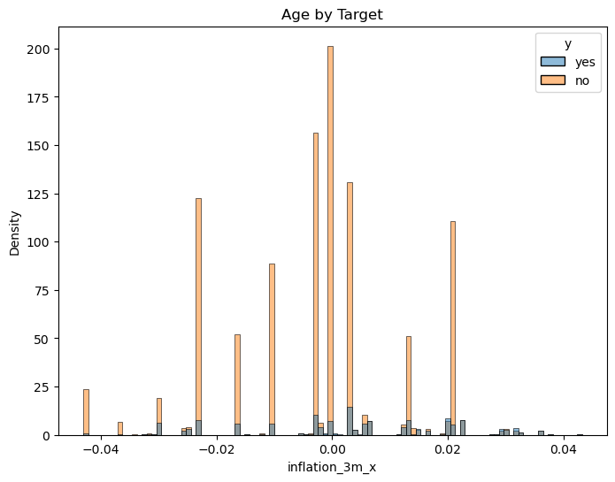
fig, ax = plt.subplots(figsize=(8, 6))
sns.histplot(data=train_set, x="year", hue="y", stat="density", ax=ax)
ax.set_title("Age by Target")Text(0.5, 1.0, 'Age by Target')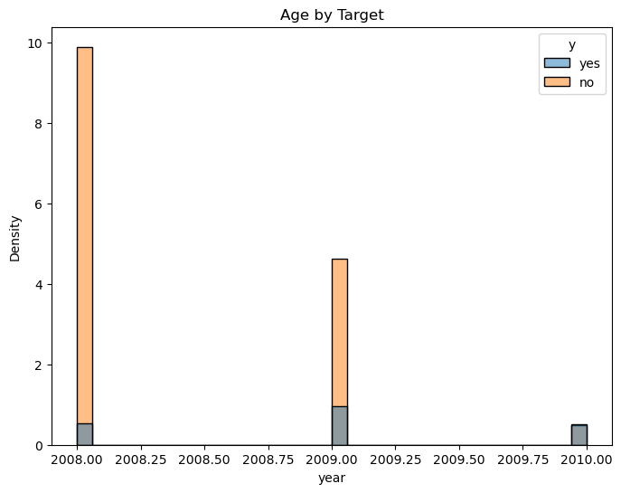
fig, axes = plt.subplots(2, 2, figsize=(14, 10))
for ax, col in zip(axes.flatten(), ["job", "education", "marital", "age_cat"]):
pd.crosstab(train_set[col], train_set["y"], normalize="index").plot(kind="bar", ax=ax)
ax.set_title(f"{col} vs Target")
ax.set_ylabel("Proportion")
ax.tick_params(axis="x", rotation=45)
plt.tight_layout()
plt.show()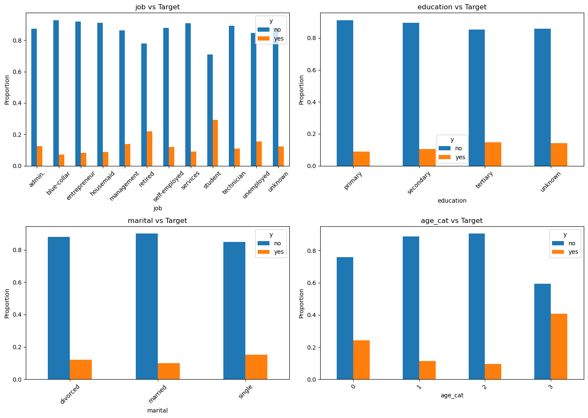
euribor_df = (train_set.groupby('date')['euribor3m']
.first()
.reset_index()
)
sns.lineplot(data=euribor_df, x='date', y='euribor3m')
plt.xticks(rotation=45);test_set| Unnamed: 0 | age | job | marital | education | default | balance | housing | loan | contact | ... | cons.conf.idx_x | y | age_cat | date | euribor3m_y | cons.conf.idx_y | cons.price.idx_y | nr.employed_y | cpi_lag_90 | inflation_3m | |
|---|---|---|---|---|---|---|---|---|---|---|---|---|---|---|---|---|---|---|---|---|---|
| 0 | 25059 | 55 | technician | single | secondary | no | 2043 | yes | no | cellular | ... | -42.0 | no | 2 | 2008-11-18 | 4.733 | -42.0 | 93.200 | 5195.8 | 93.444 | -0.010548 |
| 1 | 9678 | 54 | self-employed | divorced | tertiary | no | 3952 | no | no | unknown | ... | -41.8 | no | 2 | 2008-06-06 | 4.865 | -41.8 | 94.465 | 5228.1 | 93.994 | 0.020478 |
| 2 | 23205 | 35 | technician | divorced | secondary | no | 1085 | no | no | cellular | ... | -36.1 | no | 1 | 2008-08-27 | 4.970 | -36.1 | 93.444 | 5228.1 | 93.994 | -0.023520 |
| 3 | 17726 | 45 | services | married | secondary | no | -158 | yes | no | telephone | ... | -42.7 | no | 2 | 2008-07-29 | 4.955 | -42.7 | 93.918 | 5228.1 | 93.994 | -0.003275 |
| 4 | 945 | 33 | admin. | married | secondary | no | -6 | yes | no | unknown | ... | -36.4 | no | 1 | 2008-05-07 | 4.857 | -36.4 | 93.994 | 5191.0 | 93.994 | 0.000000 |
| ... | ... | ... | ... | ... | ... | ... | ... | ... | ... | ... | ... | ... | ... | ... | ... | ... | ... | ... | ... | ... | ... |
| 9029 | 7927 | 37 | admin. | married | secondary | no | -47 | yes | no | unknown | ... | -36.4 | no | 1 | 2008-05-30 | 4.857 | -36.4 | 93.994 | 5191.0 | 93.994 | 0.000000 |
| 9030 | 19525 | 52 | management | married | tertiary | no | 0 | no | no | cellular | ... | -36.1 | no | 2 | 2008-08-07 | 4.970 | -36.1 | 93.444 | 5228.1 | 93.994 | -0.023520 |
| 9031 | 39892 | 50 | blue-collar | married | primary | no | 3764 | no | no | telephone | ... | -40.8 | no | 2 | 2009-06-02 | 1.266 | -40.8 | 92.963 | 5076.2 | 92.843 | 0.005252 |
| 9032 | 24921 | 41 | entrepreneur | married | secondary | no | 8491 | yes | no | cellular | ... | -42.0 | yes | 2 | 2008-11-18 | 4.733 | -42.0 | 93.200 | 5195.8 | 93.444 | -0.010548 |
| 9033 | 20171 | 34 | management | married | tertiary | no | 5665 | no | no | cellular | ... | -36.1 | no | 1 | 2008-08-11 | 4.970 | -36.1 | 93.444 | 5228.1 | 93.994 | -0.023520 |
9034 rows × 32 columns
train_set_target = train_set["y"].copy()
test_set_target = test_set["y"].copy()
train_set_drop = train_set.copy().drop(["duration","y","year","day","month_numeric","cons.price.idx"],axis=1)
test_set_drop = test_set.copy().drop(["duration","y","year","day","month_numeric","cons.price.idx"],axis=1)test_set_drop = test_set.copy().drop(["duration","y","day","month_numeric","cons.price.idx"],axis=1)
num_nb= ['age', 'campaign', 'pdays',
'euribor3m', 'emp.var.rate', 'nr.employed',
'inflation_3m', 'cons.conf.idx']
cat_nb = ['marital', 'education', 'default',
'housing', 'loan', 'contact', 'poutcome', 'housing','loan']
preprocessor = ColumnTransformer([
('num', StandardScaler(), num_nb),
('cat', OrdinalEncoder(handle_unknown='use_encoded_value', unknown_value=-1),
cat_nb)
])
# Quick guide to this code
# BaseEstimator and ClassifierMixin are two classes in Sklearn.
# BaseEstimator is a general Sklearn model
# mixin is a term from software engineering, refers to a class that
# mixes in one additional feature. The model we are creating is a
# classification model so it will inherit a classification
# score method from classifier mixin. This specifies that we are making a
# classification model. There is also a RegressorMixin that we would use instead if we were doing regression
class NaiveBayes_Hybrid(BaseEstimator, ClassifierMixin):
# We always need an init method
def __init__(self, numeric_features):
# We are going to have a Gaussian Naive Bayes model for the
# continuous features and a Categorical one for the categorical
# features. We create them when we initialize
# We use this to split the features into Numerical and Categorical
self.numeric_features = numeric_features
self.gnb = GaussianNB()
self.cnb = CategoricalNB()
# sklearn models can have a variety of methods (check out their source code to learn more)
# The naive bayes models have a class, but it has more methods than we want here
# so we don't want to try it
# This is the function that does the fitting. We are going to basically
# split the categorical and numerical variables and feed each to the appropriate
# naive Bayes
def fit(self, X, y):
# These are what we will predict
# This is a standard feature of all the fit methods
self.classes_ = np.unique(y)
self.n_ = len(self.numeric_features)
# From our preprocessor, the numerical features come first
X = np.array(X)
X_num = X[:, :self.n_]
X_cat = X[:, self.n_:]
# Now we fit the Gaussian Naive Bayes and
# the categorical naive bayes
self.gnb.fit(X_num, y)
self.cnb.fit(X_cat, y)
# We always return self, which lets us fit and then do otherstuff in the same
# pipeline
return self
# We will predict some probabilities so we can show the awful model calibration
def predict_proba(self, X):
# Same deal with splitting
X = np.array(X)
X_num = X[:, :self.n_]
X_cat = X[:, self.n_:]
# We could also have a predict_log_proba method and if we wanted this to
# be more useful we would
# We get the log probability from our gnb and cnb models
# Then we need to subtract off one of the priors because
# each of the gnb and cnb are going to use the prior
log_prob = (self.gnb.predict_log_proba(X_num)
+ self.cnb.predict_log_proba(X_cat)
- np.log(self.gnb.class_prior_))
# Normalize to probabilities
prob = np.exp(log_prob)
return prob / prob.sum(axis=1, keepdims=True)
# We predict by finding the probabilities of each class and taking the max
def predict(self, X):
return self.classes_[self.predict_proba(X).argmax(axis=1)]
pipe_nb = Pipeline([
('prep', preprocessor),
('model', NaiveBayes_Hybrid(num_nb))
])pipe_nb.fit(train_set_drop, train_set_target)Pipeline(steps=[('prep',
ColumnTransformer(transformers=[('num', StandardScaler(),
['age', 'campaign', 'pdays',
'euribor3m', 'emp.var.rate',
'nr.employed',
'inflation_3m',
'cons.conf.idx']),
('cat',
OrdinalEncoder(handle_unknown='use_encoded_value',
unknown_value=-1),
['marital', 'education',
'default', 'housing', 'loan',
'contact', 'poutcome',
'housing', 'loan'])])),
('model',
NaiveBayes_Hybrid(numeric_features=['age', 'campaign', 'pdays',
'euribor3m',
'emp.var.rate',
'nr.employed',
'inflation_3m',
'cons.conf.idx']))])In a Jupyter environment, please rerun this cell to show the HTML representation or trust the notebook. On GitHub, the HTML representation is unable to render, please try loading this page with nbviewer.org.
Parameters
Parameters
['age', 'campaign', 'pdays', 'euribor3m', 'emp.var.rate', 'nr.employed', 'inflation_3m', 'cons.conf.idx']
Parameters
['marital', 'education', 'default', 'housing', 'loan', 'contact', 'poutcome', 'housing', 'loan']
Parameters
Parameters
| numeric_features | ['age', 'campaign', ...] |
print(classification_report(test_set_target, pipe_nb.predict(test_set_drop))) precision recall f1-score support
no 0.94 0.80 0.87 7986
yes 0.30 0.64 0.41 1048
accuracy 0.78 9034
macro avg 0.62 0.72 0.64 9034
weighted avg 0.87 0.78 0.81 9034
from lift import lift_func--------------------------------------------------------------------------- ModuleNotFoundError Traceback (most recent call last) Cell In[123], line 1 ----> 1 from lift import lift_func ModuleNotFoundError: No module named 'lift'
import sys
sys.path.append('.')
from lift import lift_funclift_df = lift_func(pipe_nb,test_set_drop,test_set_target)
lift_df| propensity | outcome | conversion_rate | LIFT | depth | |
|---|---|---|---|---|---|
| 8403 | 1.000000e+00 | 0 | 0.000000 | 0.000000 | 0.000111 |
| 6709 | 9.999999e-01 | 1 | 0.500000 | 4.310115 | 0.000221 |
| 6959 | 9.999999e-01 | 0 | 0.333333 | 2.873410 | 0.000332 |
| 5872 | 9.999998e-01 | 1 | 0.500000 | 4.310115 | 0.000443 |
| 5346 | 9.999996e-01 | 0 | 0.400000 | 3.448092 | 0.000553 |
| ... | ... | ... | ... | ... | ... |
| 1031 | 1.613621e-43 | 0 | 0.116058 | 1.000443 | 0.997288 |
| 1837 | 3.506982e-44 | 0 | 0.116045 | 1.000332 | 0.997288 |
| 499 | 9.915630e-50 | 0 | 0.116032 | 1.000221 | 0.997288 |
| 7501 | 9.052844e-50 | 0 | 0.116019 | 1.000111 | 0.997288 |
| 4562 | 4.441417e-66 | 0 | 0.116006 | 1.000000 | 0.997288 |
9034 rows × 5 columns
lift_df.loc[(lift_df['depth'] - 0.10).abs().idxmin()]propensity 0.949961
outcome 0.000000
conversion_rate 0.480620
LIFT 4.143056
depth 0.099956
Name: 3499, dtype: float64lift_df.loc[(lift_df['depth'] - 0.50).abs().idxmin()]propensity 0.007014
outcome 0.000000
conversion_rate 0.186670
LIFT 1.609135
depth 0.500055
Name: 3416, dtype: float64lift_df.plot(kind="line",x='depth',y='propensity');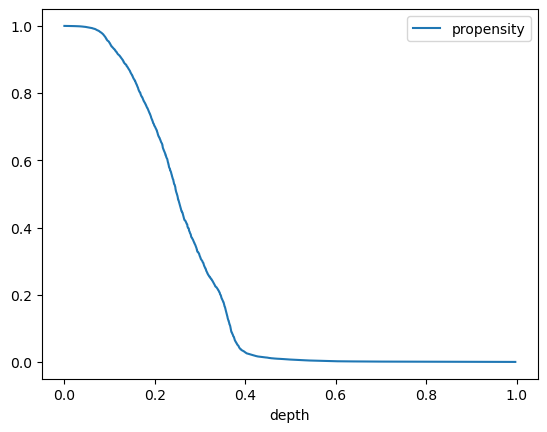
lift_df.plot(kind="line",x='depth',y='LIFT');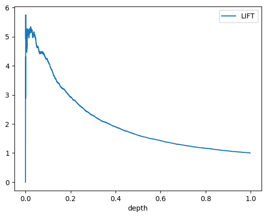
lift_df.plot(kind="line",x="depth",y="conversion_rate")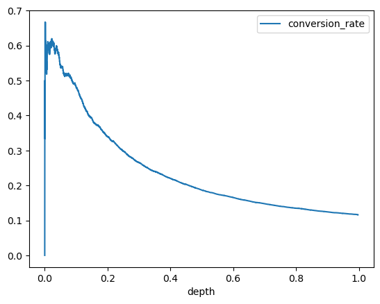
year_vec = test_set_drop["year"].unique()
test_full = test_set_drop.copy()
test_full["outcome"] = test_set_target
for year in year_vec:
test_year = test_full[test_full['year'] == year].copy()
lift_year = lift_func(pipe_nb,test_year,test_year["outcome"])
ax = lift_year.plot(kind="line",x='depth',y='LIFT');
ax.set_title(f'Lift Curve {year}')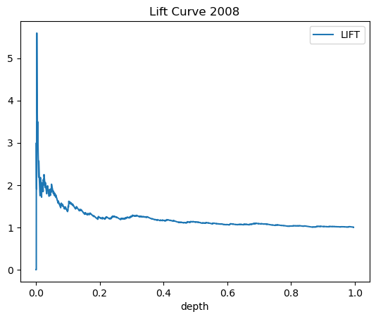
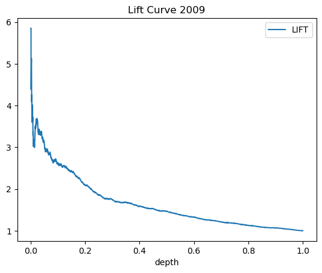
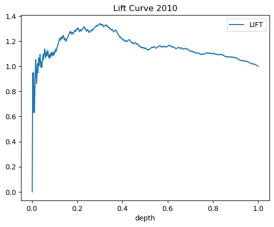
lift_func(pipe_nb,test_year,test_year['outcome'].reset_index())--------------------------------------------------------------------------- ValueError Traceback (most recent call last) Cell In[117], line 1 ----> 1 lift_func(pipe_nb,test_year,test_year['outcome'].reset_index()) Cell In[106], line 5, in lift_func(model, test_proc, test_target) 3 prob_yes = model.predict_proba(test_proc)[:, 1] 4 test_set_target_encoded = (test_set_target == 'yes').astype(int) ----> 5 fpr, tpr, thresholds = roc_curve(test_set_target_encoded, prob_yes) 6 lift_df = pd.DataFrame({"propensity":prob_yes, "outcome":test_set_target_encoded}) 7 lift_sorted = lift_df.sort_values("propensity",ascending=False) File ~/miniforge3/envs/DATA622/lib/python3.11/site-packages/sklearn/utils/_param_validation.py:218, in validate_params.<locals>.decorator.<locals>.wrapper(*args, **kwargs) 212 try: 213 with config_context( 214 skip_parameter_validation=( 215 prefer_skip_nested_validation or global_skip_validation 216 ) 217 ): --> 218 return func(*args, **kwargs) 219 except InvalidParameterError as e: 220 # When the function is just a wrapper around an estimator, we allow 221 # the function to delegate validation to the estimator, but we replace 222 # the name of the estimator by the name of the function in the error 223 # message to avoid confusion. 224 msg = re.sub( 225 r"parameter of \w+ must be", 226 f"parameter of {func.__qualname__} must be", 227 str(e), 228 ) File ~/miniforge3/envs/DATA622/lib/python3.11/site-packages/sklearn/metrics/_ranking.py:1258, in roc_curve(y_true, y_score, pos_label, sample_weight, drop_intermediate) 1160 """Compute Receiver operating characteristic (ROC). 1161 1162 Note: Support beyond :term:`binary` classification tasks, via one-vs-rest or (...) 1254 array([ inf, 0.8 , 0.4 , 0.35, 0.1 ]) 1255 """ 1256 xp, _, device = get_namespace_and_device(y_true, y_score) -> 1258 _, fps, _, tps, thresholds = confusion_matrix_at_thresholds( 1259 y_true, y_score, pos_label=pos_label, sample_weight=sample_weight 1260 ) 1262 # Attempt to drop thresholds corresponding to points in between and 1263 # collinear with other points. These are always suboptimal and do not 1264 # appear on a plotted ROC curve (and thus do not affect the AUC). (...) 1269 # kept, but does not drop more complicated cases like fps = [1, 3, 7], 1270 # tps = [1, 2, 4]; there is no harm in keeping too many thresholds. 1271 if drop_intermediate and fps.shape[0] > 2: File ~/miniforge3/envs/DATA622/lib/python3.11/site-packages/sklearn/utils/_param_validation.py:191, in validate_params.<locals>.decorator.<locals>.wrapper(*args, **kwargs) 189 global_skip_validation = get_config()["skip_parameter_validation"] 190 if global_skip_validation: --> 191 return func(*args, **kwargs) 193 func_sig = signature(func) 195 # Map *args/**kwargs to the function signature File ~/miniforge3/envs/DATA622/lib/python3.11/site-packages/sklearn/metrics/_ranking.py:930, in confusion_matrix_at_thresholds(y_true, y_score, pos_label, sample_weight) 926 raise ValueError("{0} format is not supported".format(y_type)) 928 xp, _, device = get_namespace_and_device(y_true, y_score, sample_weight) --> 930 check_consistent_length(y_true, y_score, sample_weight) 931 y_true = column_or_1d(y_true) 932 y_score = column_or_1d(y_score) File ~/miniforge3/envs/DATA622/lib/python3.11/site-packages/sklearn/utils/validation.py:464, in check_consistent_length(*arrays) 462 lengths = [_num_samples(X) for X in arrays if X is not None] 463 if len(set(lengths)) > 1: --> 464 raise ValueError( 465 "Found input variables with inconsistent numbers of samples: %r" 466 % [int(l) for l in lengths] 467 ) ValueError: Found input variables with inconsistent numbers of samples: [9034, 5539]
test_year['outcome']0 0
1 0
2 0
3 0
4 0
..
9028 0
9029 0
9030 0
9032 1
9033 0
Name: outcome, Length: 5539, dtype: int64